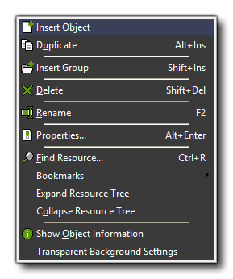

The edit menu contains a number of commands that relate to the
resource currently selected from the resource tree on the left of
the main screen (object, sprite, sound, etc.). Depending on the
type of resource selected, some of the commands may not be
visible.
- Insert...: inserts a new resource of the type currently selected. A form will then open in which you can change the properties of that resource (more on this in the following sections of the manual)
- Duplicate: This makes a copy of the currently selected resource in the resource tree. The new resource is given a default name and a form is opened in which you can change the properties of that resource.
- Insert Group: Inserts a sub-folder within the resource tree. This is useful for grouping objects and things of the same type together for easy referencing.
- Delete: Deletes the currently selected resource (or group of resources) from the resource tree. Be very careful with this as it cannot be undone. You will be warned before the operation is completed and given the option to cancel or go ahead. It should also be noted that depending on the preferences you have selected for GameMaker: Studio these resources may also be removed from the hard-drive.
- Rename: Gives the resource a new name. This can also be done in the property form for the resource, by right-clicking the resource with the mouse and selecting "rename" from the pop-up menu, or by simply clicking the resource again and typing in the new name.
- Properties: All resources have a properties form that can be brought up by selecting this command. Note that all the property forms appear within the main window and you can have open and edit many of them at the same time. You can also call up the properties by double clicking on the resource.
- Find Resource: This searches through the resource tree looking for the name of the resource that you request. This is very handy when you have a large project with many resources in grouped sub-folders.
- Bookmarks: From here you can access any of the bookmarks that you may have set in your code and scripts (you can bookmark a script or code action using <Shift> + <Control> + <NUM> , where <NUM> is a number from 0 to 9 on the keyboard).
- Expand Resource Tree: Each section (and sub-folder within) of the resource tree can be collapsed when not in use to allow more space on screen for other resources. Click on this to expand them again.
- Collapse Resource Tree: . Similar to the above, this command collapses a resource tree section or sub-folder.
- Show Object Information: It is sometimes necessary to see all the details of an object and its properties in one place, and this can be achieved by selecting this command. It can be a very useful feature for debugging and getting an overview of any object.
- Transparent Background Settings: Here you can indicate how the transparent area of the sprite and background resources should be shown in the sprite editor. You can either use a customizable block pattern, or a solid fill colour which you can change by clicking on the colour selector box.
Note that many of these commands can also be given by right-clicking on a resource (or a resource group), and then using the appropriate action from the pop-up menu.